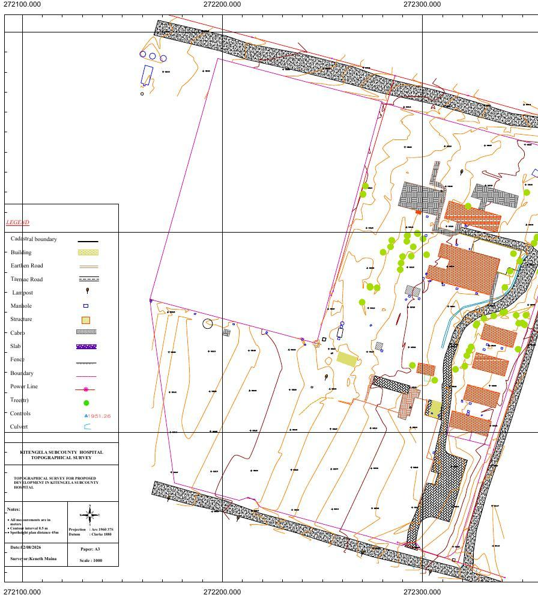

Accurate maps. Reliable spatial data. Confident decisions.
Geoexpert Land Surveyors Ltd delivers topographical and geodetic surveys, drone mapping, GIS and spatial databases for developers, institutions, engineers and landowners across Kenya.

Featured: Kitengela Subcounty Hospital topographical surveySurveying and geospatial services, end to end
From the first control point on the ground to the final spatial database on your desktop, we capture, process and deliver location data you can build on.
Land & Topographical Surveys
Detailed ground surveys that capture levels, features and contours for design, planning and landscaping.
- Topographical and contour mapping
- Cadastral and boundary surveys
- Setting out and as-built surveys
Drone Mapping
Fast, safe aerial capture of large or hard-to-reach sites, turned into survey-grade deliverables.
- Orthomosaics and aerial imagery
- Digital surface and terrain models
- Volumetrics, progress monitoring and 3D models
Geodetic Control Surveys
The accurate framework every project depends on: coordinated, verified control tied to the national datum.
- GNSS static and RTK control networks
- Benchmarks and levelling
- Coordinate adjustment and transformation
Spatial Database Creation
Your survey, asset and land data organised into clean, structured, queryable geodatabases.
- Geodatabase design and data migration
- Digitising, georeferencing and data cleaning
- Land, utility and asset registers
GIS Mapping & Analysis
Maps and spatial analysis that turn raw data into answers for planning, siting and decision-making.
- Thematic and base-map production
- Suitability, terrain and drainage analysis
- Web maps and map layouts
Remote Sensing
Satellite and aerial imagery analysed to monitor land, vegetation and change over time.
- Land-cover and land-use mapping
- Change detection and monitoring
- Image classification and terrain extraction
Our works
A sample of surveys we have delivered for institutions, developers and private clients. Select any plan to view it larger.
Survey-grade accuracy you can build on
Every project is controlled, checked and delivered in formats your architects, engineers and planners can use straight away.
Let’s map your next project
Tell us about your site and what you need. We will respond with a clear quotation.
Emailgeoexpert@gmail.com
Postal addressP.O. Box 51267-00100